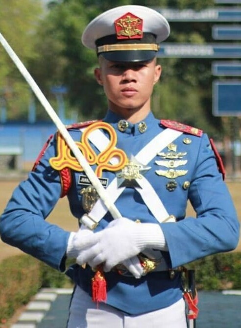

KSATRIA
AKADEMI ANGKATAN UDARA


- 
Di susun oleh: Ikhsan Ferdiansyah
Akademi Angkatan Udara (AAU) adalah sebuah institusi pendidikan tinggi militer di Indonesia yang bertujuan untuk mencetak perwira TNI Angkatan Udara yang berkualitas, berintegritas, dan profesional. Terletak di Yogyakarta, akademi ini memberikan pendidikan yang mencakup ilmu militer, kepemimpinan, teknologi penerbangan, dan berbagai disiplin ilmu terkait pertahanan udara. Para taruna yang masuk ke AAU ditempa dengan pelatihan fisik dan mental yang ketat serta diajarkan nilai-nilai kedisiplinan, loyalitas, dan semangat juang yang tinggi. Selama masa pendidikan, taruna juga dilatih keterampilan teknis penerbangan serta penguasaan teknologi modern untuk menghadapi tantangan dalam menjaga kedaulatan wilayah udara Indonesia. Lulusan AAU diharapkan dapat menjadi perwira yang mampu berkontribusi secara signifikan dalam mengamankan serta mengembangkan kekuatan udara bangsa.